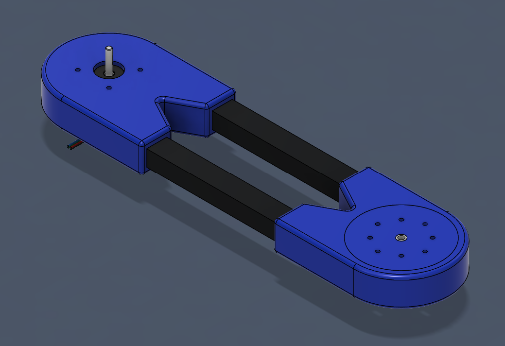

Project Summary
This is a personal project of mine to develop a custom 4 axis robotic arm that tracks and interacts with objects in its surrounding environment using vision processing and inverse kinematic calculations.

Electronics and Wiring
The visual above is an easy to understand wiring diagram consisting of component images utilized within the project. The arm is powered by a 24 volt DC power supply outputting 10 amperes which connects to any standard AC wall electrical outlet in the United States. The DC output is split between powering a Raspberry Pi and Arduino Uno CNC Shield module. A DC/DC converter limits the power going into the Raspberry Pi to just 5 volts at 3 amperes via a usb-micro connection to the Raspberry Pi to additionally utilize its onboard current limiter. The Arduino Uno CNC Shield Module supplies power to the arduino itself and the motors for control of the entire arm. Power supply from the raspberry pi to the arduino over usb was manually disabled to avoid over powering the arduino and damaging any onboard components.
Motor Control
The Brake System Encoder (BSE) input into the BSE Logic section of the Brake System Plausibility Device (BSPD) has a maximum input range of up to 12V. A voltage input range between 500mV and 4.50V is considered within normal operating range. Outside of these ranges the input is considered to be either nonfunctional for a voltage < 500mV or in a state of hard breaking for a voltage > 4.50V. The determination of the braking status is done by measuring the input voltage across a comparator. If the input voltage falls outside the specified range, the car is determined to be hard braking and a signal is passed through the BSE logic.
Vision Processing
For vision processing, a Raspberry Pi 3b+ will run YOLOv8 nano through a python OpenCV script. The actual feed comes from a Logitech C270 which has its resolution downscaled to 480x360 at 25FPS to increase frame processing speeds. The smaller vision model and lower resolution and framerate were chosen to compensate for the Raspberry Pi’s hardware limitations, that mainly being 1 GB of RAM.